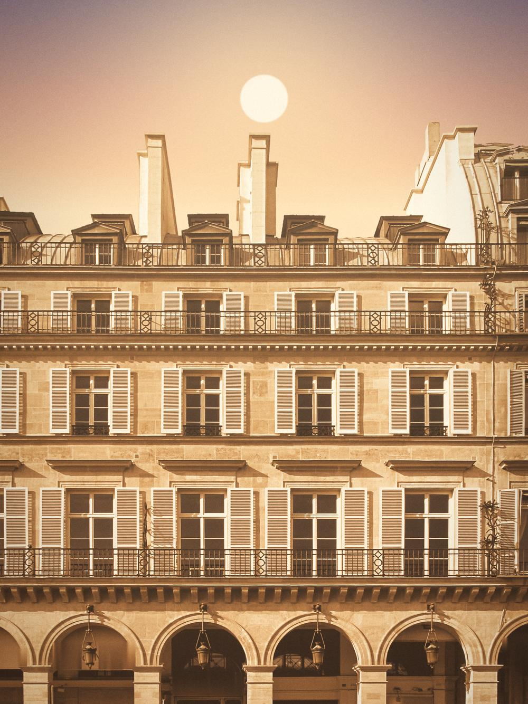
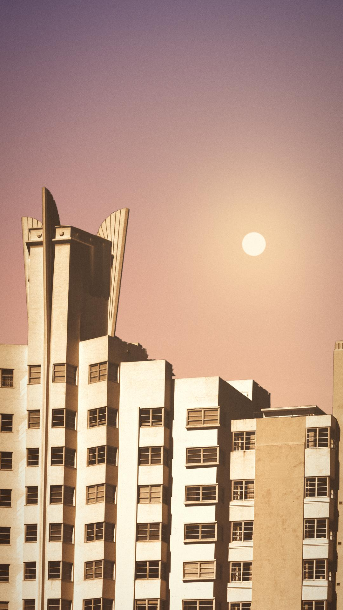
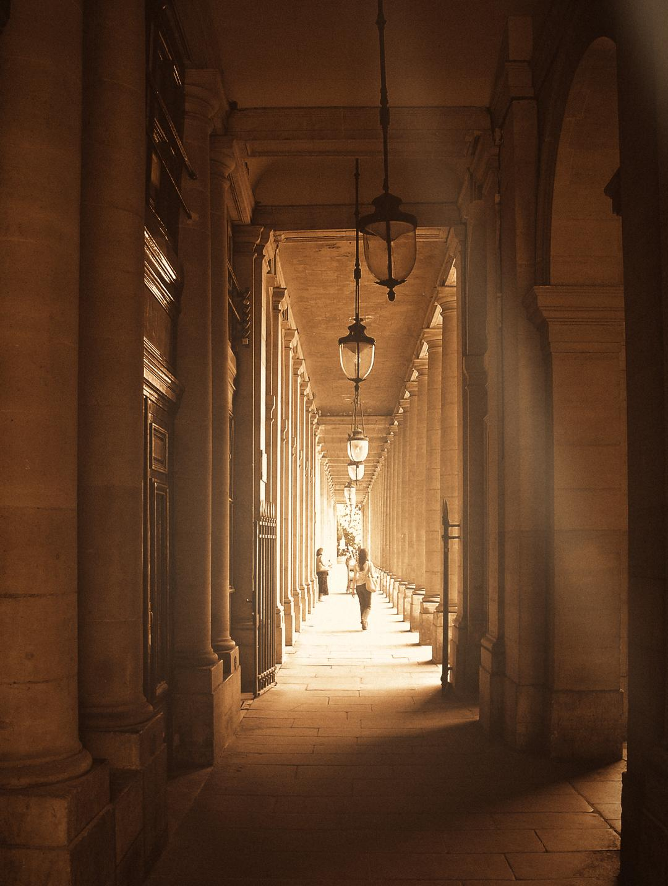
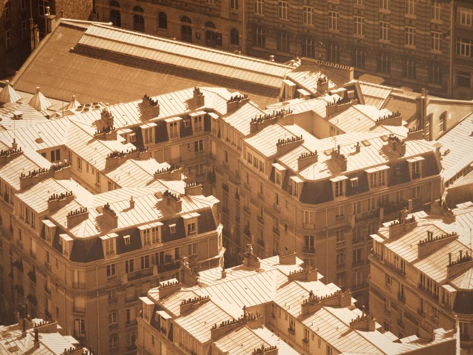
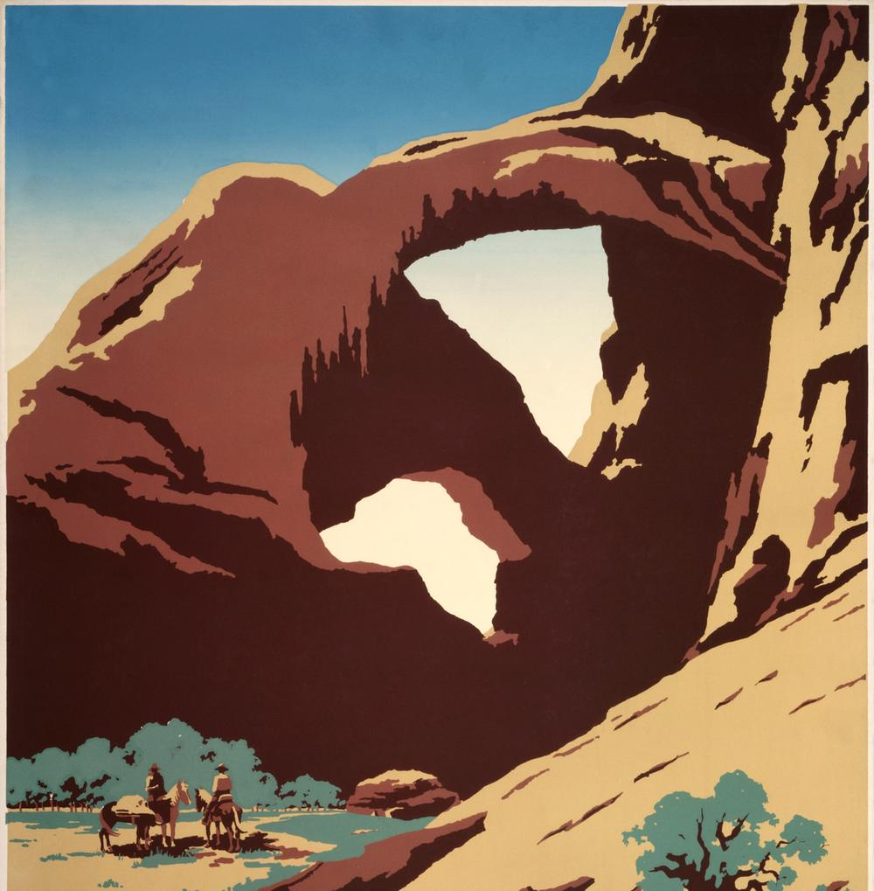
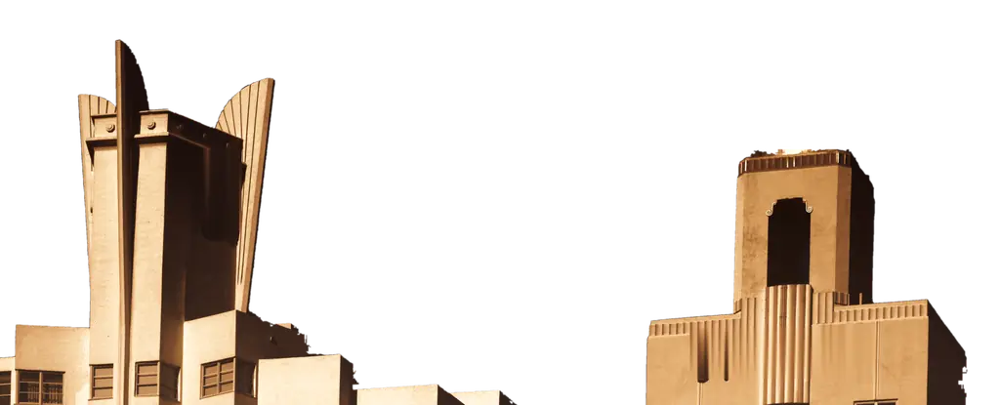

Plates






The sky, and the postcard

interactive/amber-sky.js + extras/spires-cutout · the hero, live: a dependency-free WebGL sky (gradient, sun, drifting haze strata, dithered grain) behind the graded towers as a transparent cut-out. Scrub the hour; drag in the sky to move the sun. Pauses offscreen; still frame under reduced motion.
Since 2016


Greetings from the long view.
Ten years of software that pays its own way: an inbox for AI agents, a word game past 113,000 installs, one URL for every tool. More is in the post.
— A.
interactive/postcard.{css,js} · click, Enter or Space to turn; tilts to the pointer. Easter egg: on the back, drag the stamp off (or focus it and press Delete). Under it, in microtype: the MCP install line, with a copy button.
One camera, no cuts
Scroll through the next section: The Long Take. A pinned plate, one slow dolly down the arcade toward the light, the warmth rising as you go. CSS scroll timeline where supported, rAF with ~1 s smoothing elsewhere.